PSX - Restaurando um PSX
 :::.
Por Gigacom
- Por R$ 10,00 essa eu não podia deixar passar. Esse
PSX, eu e um amigo, compramos numa feira de usados. J á
esperava que não estivesse funcionando, porém
algumas coisas poderiam ser aproveitadas e com sorte o video game
poderia voltar a vida. Acompanhe!
:::.
Por Gigacom
- Por R$ 10,00 essa eu não podia deixar passar. Esse
PSX, eu e um amigo, compramos numa feira de usados. J á
esperava que não estivesse funcionando, porém
algumas coisas poderiam ser aproveitadas e com sorte o video game
poderia voltar a vida. Acompanhe!
_________________________________________________________________________________
Todo domingo, aqui na cidade, ocorre a Feira do Rolo, onde é possivel encontrar de tudo, desde filhote de cachoro vira-lata, até tampa de privada, tudo por precinhos pra lá de bacanas. Daí consegui esse PSX por miseros R$ 10,00. Tá, o bicho tava uma nhaca, e com certeza sem funcionar, pois infelizmente, de 10 coisas que se compra nessa feira, 6 não prestam, 1 ainda dá aproveitar alguma coisa, e o que sobra vem de brinde na sacola, de todo modo é até divertido comprar por ali, sendo que por vezes encontramos muita coisa boa. Eis o coitado do PSX:
Sujo, com gosma verde nas laterais, marcas de sei-lá-o-que pra todo lado... esse foi judiado, mas tinha um outro PSX por lá bem pior, que tinha sido transformado em um verdadeiro bordel de baratas... enfim, esse tava barato, e compramos com a idéia fixa de consertá-lo, ou ao menos aproveita-lo para fazer um xaxim.
Logo que encontramos uma tomada, tratamos logo de fazer um teste. De imediato, deu pra ouvir a fonte chiando como bife na frigideira. Mau sinal... Quando cheguei em casa, me preparei para fazer a manutenção total no video game.
DICA > A primeira coisa a se fazer antes de desmontar um PSX, é ter certeza absoluta de que não há um CD dentro do console. E o motivo é simplesmente aterrador: se houver um CD espetado no leitor, na hora que você puxar a parte de cima do plástico, o CD puxará tambem a leitor, e é nessa hora que o flat do leitor fica esticado e rasga facilmente, daí só outro leitor...
Logo que o desmontei vi a maravilhosca picaretagem que algum besta fez. O principal capacitor tinha sido trocado, e o fusivel só Deus sabe onde foi parar. O pior é que esse maldito capacitor, além de mal soldado, tava fazendo a fonte literalmente fritar o console. Ô lasquera viu...
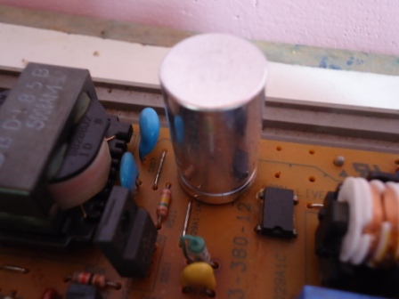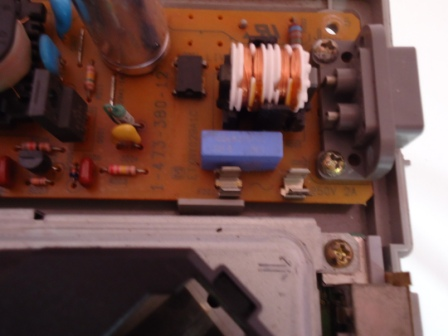
Um doce para quem descobrir onde foi parar o fusivel.
A fonte naquele estado era um sinal ruim... quando algo desse tipo é feito, normalmente encontramos danos irreparavéis em todo o video game, botando tudo a perder. Bem, continuei a desmontar o video game para a lavagem, com extreeeeemo cuidado para não partir os cabos flats e provocar mais danos.
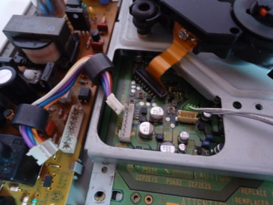 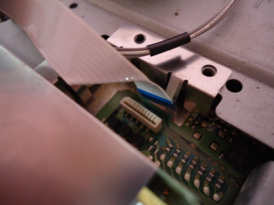
À esquerda, as conexões da fonte e do leitor à placa mãe.
A outra foto mostra o flat que liga a porta dos controles à placa.
O estado fisico aparente da placa mãe estava muito bom. Nada de sujeira, nem bicho morto... só aquela poeirinha que sempre tem em qualquer lugar, e mesmo assim em pouca quantidade. O chip de desbloqueio (que na verdade não passa de um misero CI encontravél em qualquer canto) estava intacto, com todas as soldas no lugar e com os fios em boas condições. Não tentaram transcodificar esse video game, o que é ótimo! Afinal, jogar PSX em PAL-M é uma joça.
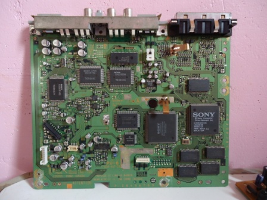 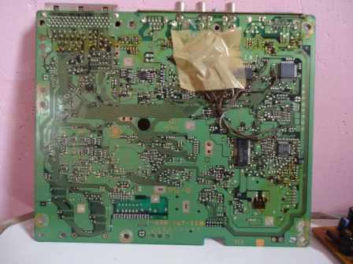
Agora faltava tirar os botões da parte de cima da carcaça, para que pudesse lavar e secar sem problemas. A dica aqui é facil, é só pressionar ao mesmo tempo as duas travas de cada botão em direção ao centro, assim os botões se soltam facilmente sem quebrar nada. Ah claro, no caso do botão do "Open" é preciso desmontar toda a trava da tampa do CD.
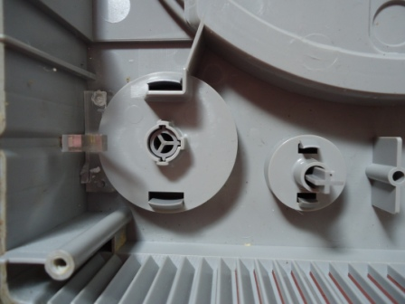 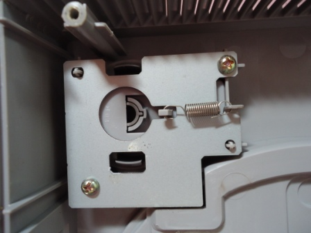
Até esse ponto o videogame estava praticamente todo desmontado, faltando apenas desmontar a parte que segura a tampa do CD. Nesse caso não a desmontei, pois é meio chato recolocar todas aquelas peças no lugar, e no final das contas, nem é preciso desmontar a tampa, pois por ela possuir um formato grande, e por abrir bastante tambem, não dificulta qualquer opeção de limpeza ali.
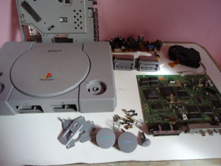
Agora vamos à lavagem. O plástico do PSX é poroso, o que dificulta um pouco a limpeza. Nesses casos, a melhor opção é utilizar uma escova com cerdas macias, sabão e bastante água. A sujeira costuma sair facilmente depois de umas boas esfregadas, e a escova facilita imensamente na hora de tirar aquela poeira que se acumula nas entradas de ar do console. Os botões tambem são limpos da mesma forma.
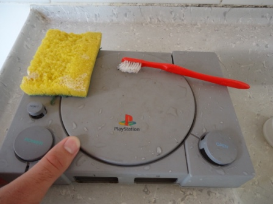 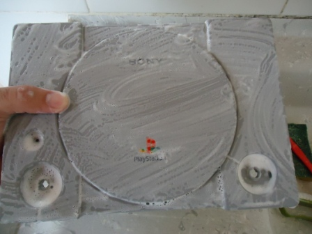
Um antes e durante... o depois vocês verão no final.
A porta de entrada dos controles e do memory card é formada por uma peça montada, e literalmente presa em uma armação com uma chapa de metal. É possivel desmontar tudo, porém não sem mandar pro espaço a chapinha. Portanto, limpei essa peça apenas superficialmente utilizando a escova e tomando cuidado para não cair água dentro (que sempre é um saco de tirar de lá depois). Tambem, não estava tão sujo assim, com algo que demandasse uma limpeza mais séria.
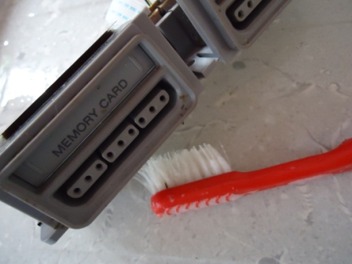
Com as partes plasticas todas limpas, chega a remontagem. Ha que se notar que os botões Power e Open possuem cada, uma mola embaixo deles que serve justamente para mantê-los sempre erguidos e para fazer aquele movimento de vai e vem de todo botão. Portanto, a primeira coisa a se fazer é justamente colocar essa mola antes de encaixar esses botões de volta no console.
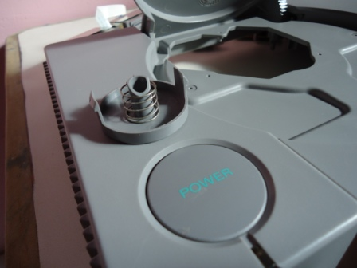
A parte do botão Open é constituida de diversas peças. Abaixo, sequencia de fotos que mostram como remontar essa peça:
Agora a parte ruim da historia... como havia dito, algum tosco resolveu estragar de vez com a fonte desse video game, e isso fez com que o resto do video game fosse pro saco tambem. A fonte, a placa mãe e o leitor estão estragados, e só há conserto viavel para a fonte. Mesmo assim, possivelmente consertar essa fonte saíra mais caro que comprar outro PSX lá na feira, então para este caso, resolvi apenas aproveitar as peças de um outro PSX para montar dentro da carcaça deste (que está bem mais bonita).
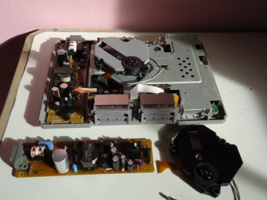
PSX com peças novas. O objetivo agora é ficar bonito hehehe
E com vocês, o resultado da fachina:
O teste final e...
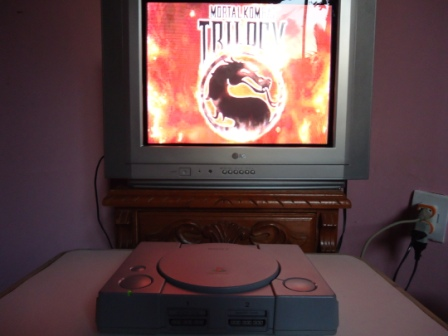
Voilá! Um PSX plenamente funcional. Tá certo que tive que trocar quase tudo dentro dele... mas o que importa, é que agora tenho um PSX bonitão pra curtir hehehe.
Acesse o Trombone e comente sobre essa matéria!


Aqui, vou apresentar a restauração de um controle de SNES que comprei em péssimo estado numa feirinha da minha cidade, e que agora está lindinho funcionando perfeitamente. Confira as dicas, e faça uma restauração você também
Restaurando um controle de PSX
Peguei o mais feinho e judiado dos controles para fazer esse artigo. O coitado estava encardido na parte de cima, e debaixo dele encontrei arranhões nas partes de apoio da mão, e bastante sujeira acumulada nas inscrições. O conector do cabo estava muito arranhado e sujo tambem, o cabo então nem se fala... sujava a mão só de pegar